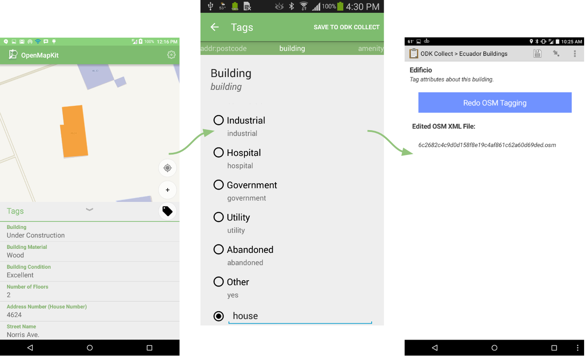
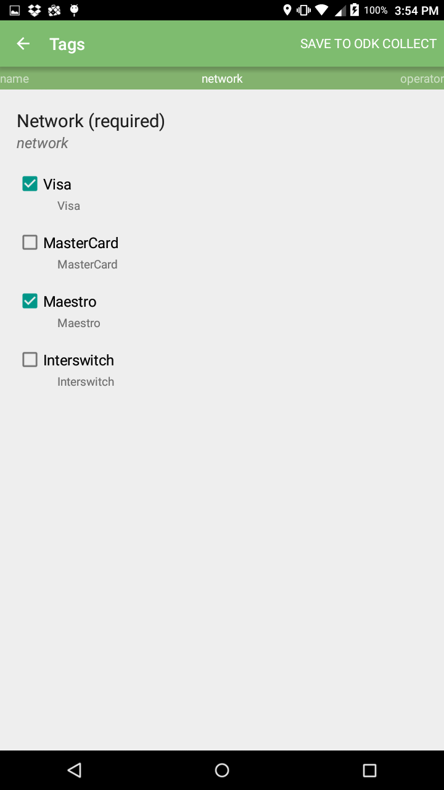
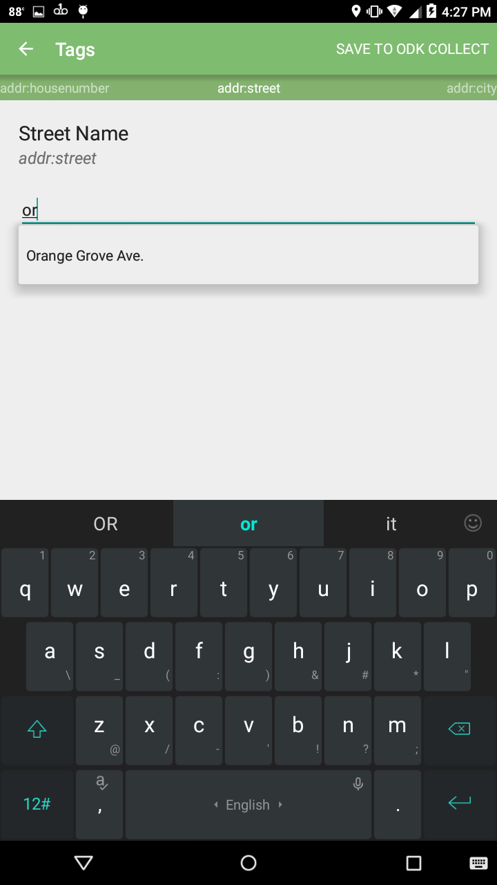
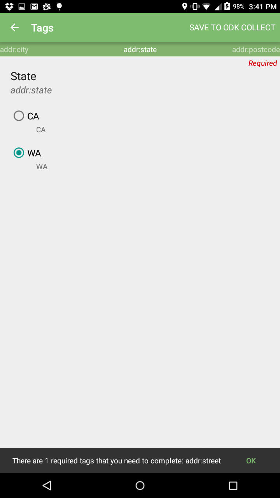
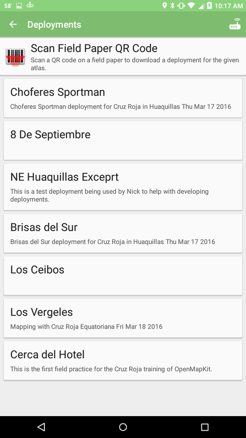
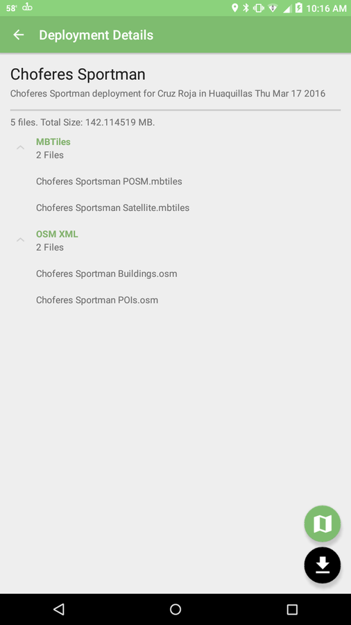
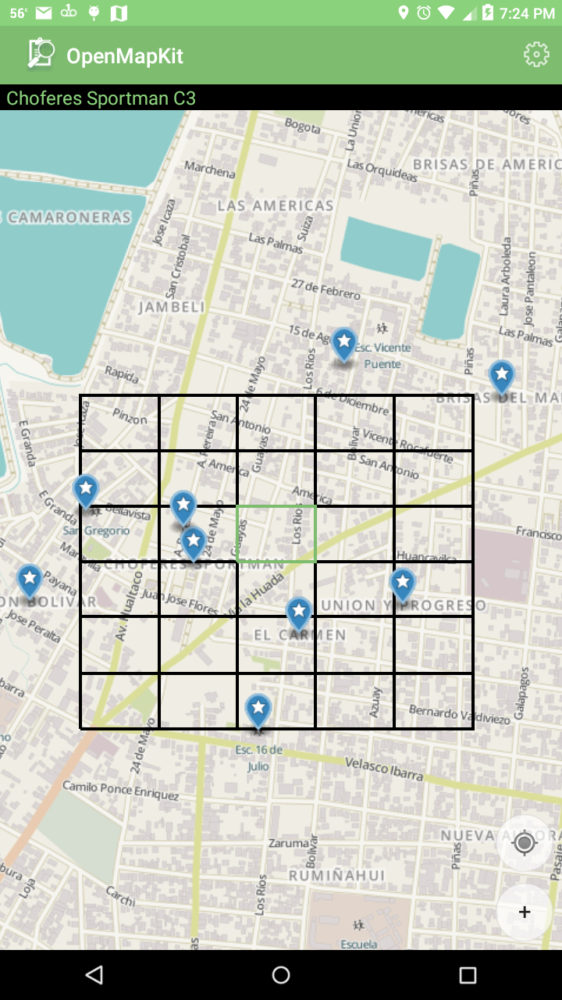
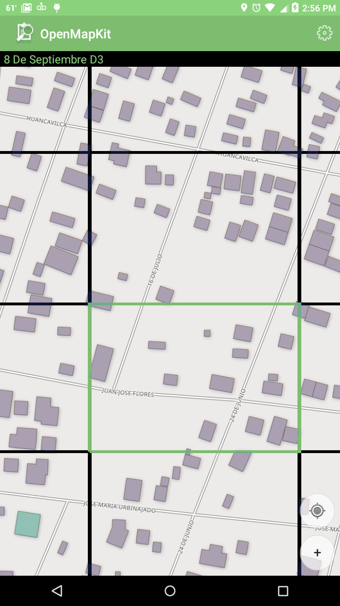

OpenMapKit Android
OpenMapKit Android allows you to browse OpenStreetMap features and edit their tags as a part of an OpenDataKit survey. It functions as a companion app to ODK Collect, where you have a specific survey question that is of the OSM type. From there, you can launch into OpenMapKit to select a feature and edit tags.

Purpose
The primary purpose of OpenMapKit is to edit tags for OpenStreetMap features. You can either a) select existing features (nodes, ways, relations), or b) add & edit POIs (nodes).
The list of tags to edit, as well as possible values, are defined in your ODK XForm. This workflow is beneficial for large survey operations, because it promotes consistency in the data.
You can think of it as a plug-in to ODK Collect. Whenever you encounter an OSM question, you are launched into OpenMapKit to edit and tag OpenStreetMap data relevant to the survey question you are working on.
Constraints
We also have constraints that can be set on the tags in the survey. This provides the ability to do things like: make the question required, select one or many tag values, typeahead text input, numeric input, etc.
| Select Multiple | Typeahead | Required |
|---|---|---|
|  |  |  |
More documentation on constraints can be found on openmapkit.org and Github.
Deployments
The easiest way to get OpenStreetMap data on your phone for offline use is through the deployment feature. When connected to OpenMapKit Server, you can download a deployment of data. A deployment is simple: on the server, we have a directory with a manifest, OSM XML, and MBTiles data. That data can then be deployed to a fleet of connected phones.
Before we had implemented this, we individually connected phones via USB and transfered data to each, one by one. Now, you can automatically download a deployment with the push of a button!
| List of Deployments | Deployment Details |
|---|---|
|  |  |
Field Papers Integration
Our latest work has been a part of the POSM project. In addition to integrating the OSM stack on a portable piece of hardware, we wanted to unite OpenMapKit with Field Papers. Now, when you create a field paper atlas on POSM, a deployment is automatically created for that atlas. You can scan the QR code on a field paper, and OpenMapKit will open the corresponding deployment to download. The included files in the deployment include:
- GeoJSON of the pages in the atlas
- MBTiles of the atlas area
- OSM XML of the atlas area
| View of Atlas | Zoomed to Page |
|---|---|
|  |  |